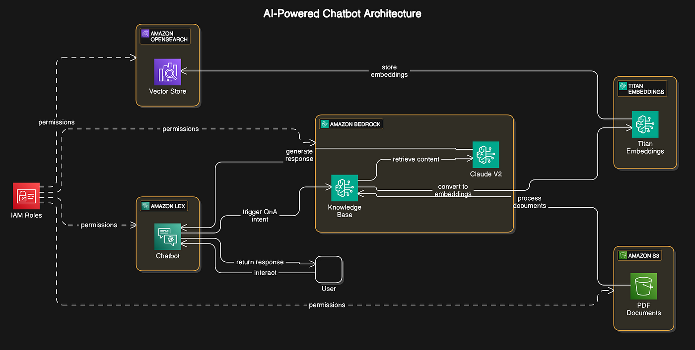

Projects
Below are some of the projects I've worked on, showcasing my expertise in AI, cloud computing, and enterprise solutions. You can view more on my GitHub.
Cloud Infrastructure Optimisation
Optimised cloud infrastructure for cost and performance using AWS services such as EC2, S3, and Lambda. This project involved:
- Designing scalable and secure cloud architectures.
- Implementing cost-saving strategies using AWS Cost Explorer and Auto Scaling.
- Deploying serverless applications with AWS Lambda for improved efficiency.
AI-Powered Recommendation System

Developed an AI-powered recommendation system using Amazon SageMaker and Amazon Personalize. Key features include:
- Leveraging machine learning models for personalised user recommendations.
- Integrating real-time data processing with AWS Kinesis.
- Ensuring fairness and bias mitigation using Amazon SageMaker Clarify.
Generative AI Chatbot
Built a generative AI chatbot using Amazon Bedrock and Amazon Lex. This project highlights:
- Implementing transformer-based large language models (LLMs) for natural language understanding.
- Using prompt engineering techniques to improve response quality.
- Deploying the chatbot with AWS Lambda and API Gateway for scalability.
Enterprise Architecture Modernisation
Modernised legacy systems using TOGAF and AWS Well-Architected Framework. Key achievements include:
- Migrating on-premise systems to AWS with minimal downtime.
- Designing hybrid cloud architectures for improved scalability and security.
- Implementing governance and compliance strategies using AWS Config and CloudTrail.